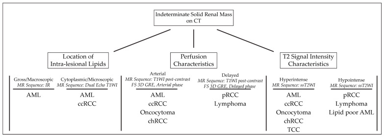
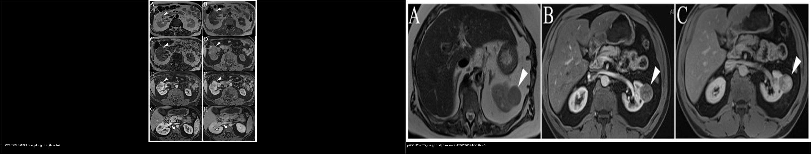
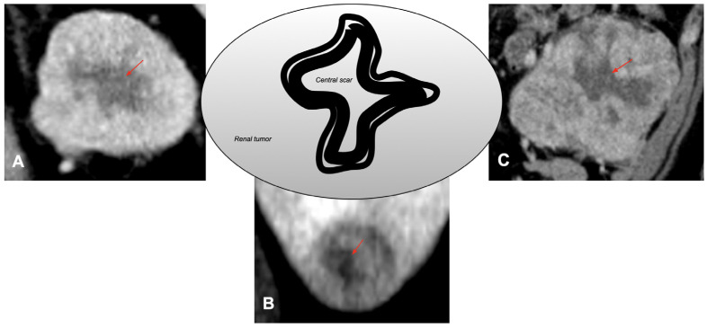
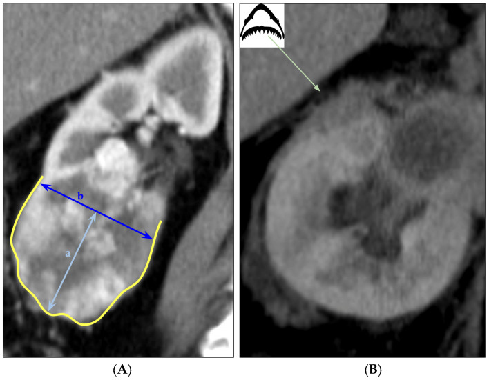
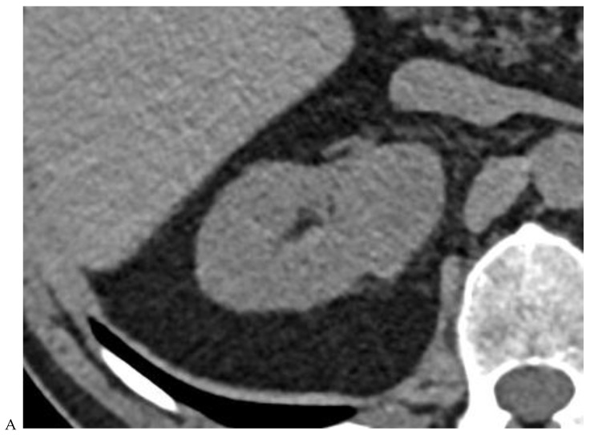
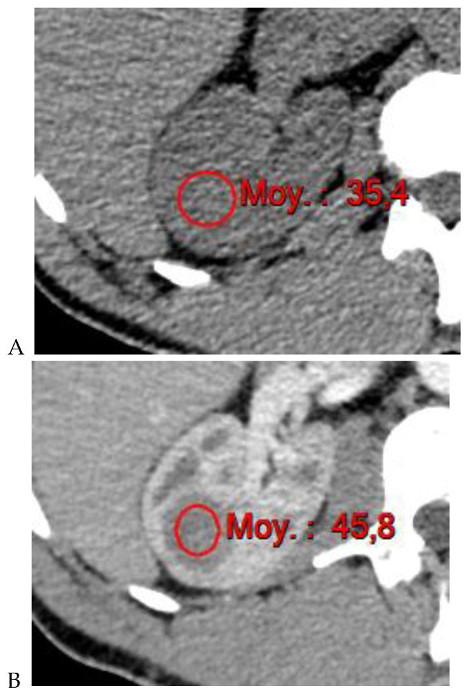
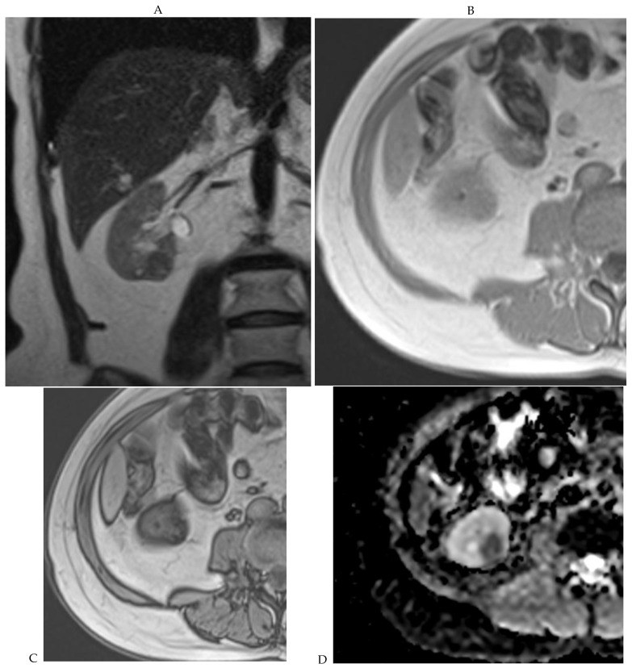

151 — U thận đặc: RCC vs oncocytoma vs AML / Solid renal masses
Tags: pattern:u-than-dac vung:than score:ccLS protocol:CT-da-thi-than incidentaloma:u-than-tinh-co
Mức chắc chắn (certainty): tổng hợp y văn (literature synthesis) — nhóm tự biên từ y văn mở (Cancers 2024/2023/2026, Medicina 2022, Transl Androl Urol 2025), số liệu lấy nguyên từ bảng/Fig nguồn.
1. Tổng quan — mật độ ngấm, mỡ vi thể & vật lý T2 quyết định tên u
- U thận đặc (solid renal mass) chiếm ~85% u ác đường niệu; trong đó ung thư tế bào thận (renal cell carcinoma — RCC) ~85% u đặc ác tính: tế bào sáng (clear cell — ccRCC) ~70–75%, nhú (papillary — pRCC) 10–15%, kỵ màu (chromophobe — chRCC) ~5%; oncocytoma lành chiếm 3–7% u đặc.
- Ngấm thật (true enhancement): tăng ≥ 20 HU trên CT, ≥ 15% trên MRI giữa thì trước tiêm và thì thận (nephrographic 90–100s); tăng < 10 HU là giả ngấm (pseudoenhancement). Vùng 10–20 HU là vùng xám — phải đo ROI cùng vị trí 3 thì.
- TẠI SAO mỗi loại có "chữ ký" riêng (theo vật lý + mô bệnh):
- ccRCC: tế bào chứa glycogen + lipid vi thể (microscopic fat) và mạng mạch VEGF dày → T2W sáng (nhất là trong các u đặc), ngấm mạnh–không đều thì động mạch rồi rửa trôi (washout), hay hoại tử. Lipid vi thể làm mất tín hiệu trên chuỗi đối pha (opposed-phase) — ccRCC là RCC duy nhất rớt tín hiệu rõ (gặp ở ~60%).
- pRCC / chRCC: mật độ tế bào cao, ít mạch → T2W tối, ngấm kém, đồng nhất, ít hoại tử.
- oncocytoma: tế bào ái toan do ty thể dày đặc (eosinophilic) → ngấm mạnh kiểu nan hoa (spoke-wheel) và có thể sẹo trung tâm xơ (central scar) tối T2, ngấm muộn — nhưng chỉ ~30% oncocytoma có sẹo và sẹo không đặc hiệu.
- u cơ mỡ mạch (angiomyolipoma — AML): thành phần mỡ đại thể (macroscopic fat) − 10 đến − 100 HU (chốt chẩn đoán, không cần sinh thiết); AML nghèo mỡ (fat-poor) không thấy mỡ đại thể → phải dùng chemical-shift hoặc hình dạng.
2. Mẫu hình + chẩn đoán phân biệt theo tín hiệu T2 và mức ngấm (Gamut)
- T2W sáng + giàu mạch + hoại tử/hỗn hợp → ccRCC, (hiếm) di căn giàu mạch, u cơ biểu mô (PEComa).
- T2W tối + kém mạch + đồng nhất → pRCC, lymphoma, di căn — phân biệt bằng bối cảnh (lymphoma thường nhiều khối/hai bên + lan quanh).
- T2W tối + đồng nhất + ngấm mạnh + sẹo/vôi → oncocytoma hay chRCC — không phân biệt chắc trên ảnh.
- Có mỡ đại thể trong u → AML (chẩn đoán xong); nếu đa ổ 2 bên + trẻ + mỡ → nghĩ xơ cứng củ (tuberous sclerosis — TSC).
- Đa ổ/hai bên + u sáng tế bào ở người trẻ → hội chứng di truyền (VHL, BHD, SDH) — không chỉ một u đơn độc.
- Gợi nhớ "FAT–SCAR–NECROSIS": Fat (mỡ = AML) · Angiomyolipoma vs Tumor giàu mạch (ccRCC) · Scar (sẹo trung tâm = oncocytoma/chRCC) · Chromophobe · Aggressive (hoại tử/lobulation sâu = u độ cao) · Renal medullary (hiếm).

Thuật toán tiếp cận u thận đặc lành/ác theo tín hiệu T2 và chemical-shift. Nguồn: Cancers 2023, PMC10216374, CC BY 4.0.3. Bảng so sánh phân biệt (ma trận đối chiếu)
| Thực thể (entity) | Hình ảnh điển hình | Chốt vào (rule-in) | Chốt loại (rule-out) | Gợi ý xác nhận |
|---|---|---|---|---|
| ccRCC (u sáng tế bào) | T2W sáng, hỗn hợp, giàu mạch không đều, hoại tử, mất tín hiệu đối pha | T2W sáng + mất tín hiệu opposed-phase (mỡ vi thể) + ngấm mạnh rồi thải | Sẹo trung tâm đơn độc đều + T2 rất tối → nghi oncocytoma/chRCC | ccLS ≥ 4 trên MRI; sinh thiết; CT đa thì |
| pRCC (u nhú) | T2W rất tối, đồng nhất, kém mạch (ví dụ 35→45→59 HU), vỏ bao | T2W tối + ngấm < ngấm vỏ thận + đa ổ/hai bên | Ngấm mạnh rồi thải → không phải pRCC | Sinh thiết (chẩn đoán mô học) |
| chRCC (kỵ màu) | T2W tối–trung bình, đồng nhất, ngấm vừa, có thể tăng đậm độ nền | Ngấm vừa phải đồng nhất + không hoại tử | PEER>1,05 → nghĩ oncocytoma | Sinh thiết (khó tách với oncocytoma) |
| oncocytoma | Sẹo trung tâm + ngấm mạnh nan hoa; PEER MRI cao (trung vị 1,33) | Ngấm mạnh đồng đều ± sẹo trung tâm ngấm muộn | Sẹo cũng có ở chRCC/ccRCC → không đặc hiệu | Sinh thiết (RMB), theo dõi |
| AML mỡ đại thể | Mỡ − 10 đến − 100 HU, mạch xoắn, ± xuất huyết | Có mỡ đại thể trong u = chốt, khỏi sinh thiết | Không thấy mỡ → không loại được fat-poor AML | CT (chốt), cắt lớp mỏng |
| AML nghèo mỡ (fat-poor) | T2 tối, không mỡ đại thể, mềm/hình cầu | Độ cầu thấp (sphericity ≤ 0,80) + nữ → nghi AML | Nếu T2 sáng + mỡ vi thể → ccRCC | Chemical-shift MRI; sinh thiết |
| U thận di căn/lymphoma | Nhiều khối, hai bên, T2 tối đồng nhất, ngấm kém | Nhiều tổn thương + bối cảnh u nguyên phát/lymphoma | Khối đơn độc giàu mạch → RCC | Sinh thiết + PET-CT (CT bụng đơn thuần không đủ) |

Trái: ccRCC — T2W sáng, không đồng nhất (hoại tử). Phải: pRCC — T2W tối, đồng nhất. Nguồn: Cancers 2023, PMC10216374, CC BY 4.0. Ảnh ghép letterbox.Sẹo trung tâm — "chốt hụt" kinh điển
- Sẹo trung tâm xuất hiện ở oncocytoma nhưng cũng ở chRCC và cả ccRCC → độ đặc hiệu kém, không được dùng một mình để gọi lành.
- Trên CT đa thì, oncocytoma thường ngấm mạnh lan toả; nhưng nếu chỉ dựa "sẹo trung tâm" dễ bỏ sót RCC, dẫn tới theo dõi oan hoặc cắt thận muộn.

Sẹo trung tâm (mũi tên đỏ) xuất hiện ở cả 3 loại — chứng minh sẹo không đặc hiệu. Nguồn: Cancers 2026, PMC13359438, CC BY 4.0.4. Protocol chụp + hệ điểm (ccLS) + phân giai đoạn
- CT đa thì thận (multiphasic CT): không tiêm (đo HU nền + mỡ/vôi/máu) → thì vỏ–tuỷ (corticomedullary) 30–40s (bắt mạch) → thì thận (nephrographic) 90–100s (đo ngấm thật) → thì bài tiết (excretory) 5–10 phút (hệ niệu). Lát ≤ 1,5 mm để đo hình dạng/độ cầu.
- MRI u thận tối thiểu: T2W (không xoá mỡ + xoá mỡ), T1W in-phase/opposed-phase (chemical-shift), DWI/ADC, và DCE thì động mạch–tĩnh mạch–muộn.
- Điểm khả năng tế bào sáng (clear cell likelihood score — ccLS) trên MRI (1–5): ccLS ≥ 4 = nghĩ ccRCC. Tổng hợp 8 nghiên cứu MRI (1.429 u, 869 ccRCC) cho DOR 14,69 (KTC 95% 9,71–22,22); CT ccLS yếu hơn, DOR 5,64 — bằng chứng dùng thường quy còn "yếu" (weak).
- Dấu hiệu PCLE (peritumoral cortex low-enhancement) trên thì vỏ–tuỷ: Se 64,3%/Sp 94,8% cho u ác; với u ≤ 3 cm Sp 100% — dấu "hữu ích loại trừ" chứ không đủ loại vào.
- PEER (peak early-phase enhancement ratio) trên MRI tách chRCC với oncocytoma: oncocytoma trung vị 1,33 vs chRCC 0,55; cutoff ≤ 1,05 gọi chRCC (Se 100%, Sp 85,7%).
- Độ cầu (sphericity) trên CT tách fat-poor AML vs RCC: AUC 0,909; cutoff 0,801 (Se 86,4%/Sp 84,7%); mô hình đa biến (nữ + thể tích nhỏ + độ cầu thấp) AUC 0,965.
- Phân giai đoạn AJCC/TNM 8th (u thận): T1a < 4 cm**, T1b **4–7 cm**, T2a **7–10 cm**, T2b **> 10 cm; T3 = xâm lấn mỡ quanh thận/xoang thận hoặc TM thận (T3a), TM chủ dưới dưới hoành (T3b), trên hoành (T3c); T4 = vượt mạc Gerota/tuyến thượng thận. Nephrometry (RENAL/PADUA) để lập kế hoạch cắt bán phần.
flowchart TD
A[U thận đặc tình cờ ≤ 4 cm] --> B{Có mỡ đại thể -10 đến -100 HU?}
B -->|Có| C[AML: chẩn đoán xong, theo dõi]
B -->|Không| D{T2W sáng + mỡ vi thể / giàu mạch + hoại tử?}
D -->|Có| E[ccLS ≥ 4: nghĩ ccRCC]
D -->|Không| F{T2W tối + đồng nhất?}
F -->|Ngấm kém| G[pRCC / lymphoma / di căn]
F -->|Ngấm mạnh ± sẹo| H[oncocytoma vs chRCC: PEER ≤ 1,05 = chRCC]
E --> I{< 4 cm, nguy cơ mổ?}
I -->|Thấp| J[Theo dõi chủ động AS / sinh thiết]
I -->|Cao| K[Cắt bán phần ưu tiên]
C --> L{AML > 4 cm hoặc chảy máu?}
L -->|Có| M[Can thiệp nút mạch]
5. Biến thể bình thường và cạm bẫy
- Giả u (pseudotumor) lành: cột Bertin phì đại (hypertrophic column of Bertin), mỡ xoang thận (renal sinus fat), dày trụ (septum of Bertin) — đồng ngấm với vỏ thận, không ngấm kiểu khối → đừng gọi u.
- AML nghèo mỡ giả RCC: không thấy mỡ đại thể nhưng vẫn là AML — nghi khi nữ + độ cầu thấp + T2 tối, xác nhận chemical-shift/sinh thiết (đừng cắt thận oan).
- oncocytoma vs chRCC: sinh thiết mô học cũng có thể không tách được → dùng PEER MRI; nếu không chắc, theo dõi/lấy trọn u nhỏ thay vì cắt thận rộng.
- RCC nang hoá dễ bị xếp nhầm Bosniak: nốt đặc ngấm dù nhỏ cũng lên Bosniak IV (xem bài 150).
- Giả ngấm nang/nốt < 1 cm do hiệu ứng thể tích (volume averaging) — lát mỏng hoặc MRI xác nhận.
- Bỏ sót nhánh mạch: ccRCC hay có huyết khối TM thận/TM chủ dưới (tumor thrombus) — luôn đọc thì tĩnh mạch tới dưới hoành để phân giai đoạn.
- Lobulation sâu / bờ răng cưa (saw-tooth) và mạch quanh u nổi gợi độ mô học cao/xâm lấn — không được gọi lành.

Lobulation sâu (contour vàng, tỷ số cung–dây arc-chord) gợi u xâm lấn. Nguồn: Cancers 2026, PMC13359438, CC BY 4.0.6. Tự lượng giá — Blind Quiz
Ca 1 — Nam 42 tuổi, u thận phải 4,8 cm, CT đa thì. Đồng tỷ trọng nền, ngấm mạnh rồi thải dần, có sẹo trung tâm.

- Hỏi: mô tả ngấm theo thì? 3 chẩn đoán phân biệt? Sẹo trung tâm có chốt lành không?
Bấm để hiện đáp án (findings + chẩn đoán)
- Findings: u 4,8 cm đồng tỷ trọng ở thì không tiêm, ngấm ở thì vỏ–tuỷ (B) rồi rửa trôi ở thì thận và bài tiết (C, D), có sẹo trung tâm (E).
- Chẩn đoán: oncocytoma (P) — nhưng sẹo trung tâm KHÔNG đặc hiệu (gặp cả chRCC/ccRCC); cần PEER MRI/sinh thiết nếu u nhỏ, theo dõi.
- Nguồn: Cancers 2024, PMC11120239, CC BY 4.0.
Ca 2 — Nữ 63 tuổi, u thận 3 cm, CT đa thì đo được 35 HU (nền) → 45 HU (vỏ–tuỷ) → 59 HU (thì thận).

- Hỏi: mức ngấm nói gì về mạch máu u? Chẩn đoán? Dấu hiệu MRI đi kèm?
Bấm để hiện đáp án (findings + chẩn đoán)
- Findings: ngấm kém (45 HU < ngấm vỏ thận, tăng < 20 HU giữa các thì) — hypovascular.
- Chẩn đoán: ung thư tế bào thận nhú (papillary RCC) — MRI tương ứng T2W tối, đồng nhất (ảnh composite mục 3).
- Nguồn: Cancers 2024, PMC11120239, CC BY 4.0.
Ca 3 — Nam 46 tuổi, u thận phải, MRI thấy T2 tối, không thấy mỡ đại thể nhưng mất tín hiệu trên chuỗi đối pha.

- Hỏi: dấu hiệu chốt? Đây là RCC hay AML? Vì sao không cần cắt thận?
Bấm để hiện đáp án (findings + chẩn đoán)
- Findings: T2 tối (A), mất tín hiệu rõ trên chuỗi đối pha (opposed-phase, C) = mỡ vi thể (không phải mỡ đại thể); ADC tối (D).
- Chẩn đoán: AML nghèo mỡ (fat-poor angiomyolipoma) — chốt bằng chemical-shift/kết hợp độ cầu thấp; tránh cắt thận oan cho tổn thương lành.
- Nguồn: Cancers 2024, PMC11120239, CC BY 4.0.
Ca 4 — Ghép đối chiếu: hai u thận, cùng T2W — bên nào gợi ccRCC, bên nào gợi pRCC?
Bấm để hiện đáp án (findings + chẩn đoán)
- Trái — ccRCC: T2W sáng, không đồng nhất (hoại tử) + mỡ vi thể. Phải — pRCC: T2W tối, đồng nhất.
- Chốt: ccRCC sáng trên T2 vì giàu nước/glycogen–lipid vi thể + mạng mạch; pRCC tối vì mật độ tế bào cao. Nguồn: Cancers 2023, PMC10216374, CC BY 4.0.
Bài liên quan chéo
- 100 – Tổng quan hệ Bụng
- 110 – Giải phẫu bụng (khoang quanh thận)
- 150 – Nang thận Bosniak & u thận (nang phức tạp, ngấm thật)
- 152 – Sỏi niệu & ứ nước
- 141 – Phúc mạc (gieo rắc/sau phúc mạc)
- 131 – Tắc mật (đối chiếu bảng hệ Bụng)
Ảnh
- Xem
images/CREDITS.md. Tất cả ảnh bài này là CC BY 4.0 (MDPI Cancers) → được phép ghép letterbox (composite).
Không dùng để chẩn đoán độc lập khi chưa có người hướng dẫn.